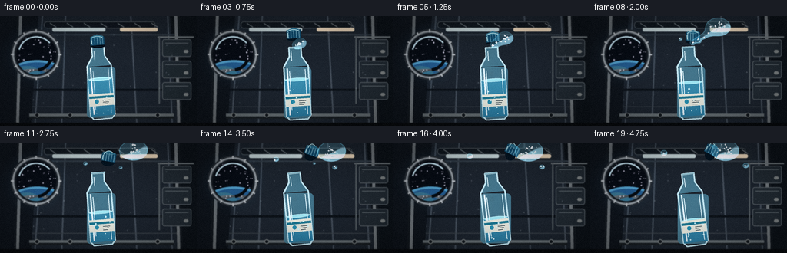
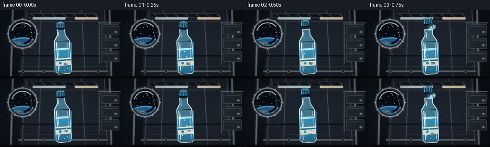
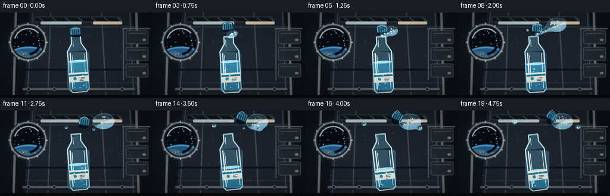
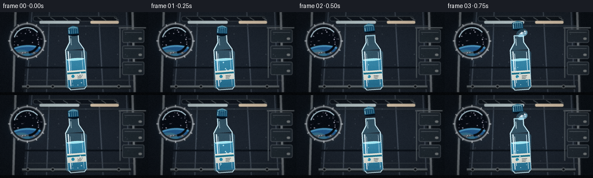

CODING AGENTS AS PIXEL WORLD MODELS
traex/DeepSeek-V4.1-Flash · mechanics_0005
点击播放 · 原生 RGB 像素
逐轮保存的候选
回放视频、检查图与代码变化。
每份候选均可单独播放。实际图片检查记录在下方工具轨迹中。
候选 01播放与检查图
点击播放 · 原生 RGB 像素


展开代码变化
--- 上一保存版本
+++ 本次保存版本
@@ -0,0 +1,597 @@
+from pathlib import Path
+import math
+
+import numpy as np
+from PIL import Image, ImageDraw, ImageFilter
+
+import artifact_io
+
+
+W, H = 256, 144
+FPS = 4
+FRAMES = 20
+SS = 4
+RW, RH = W * SS, H * SS
+FW, FH = W * 2, H * 2
+
+
+def clamp(value, lo=0.0, hi=1.0):
+ return max(lo, min(hi, value))
+
+
+def smoothstep(lo, hi, value):
+ if lo == hi:
+ return float(value >= hi)
+ x = clamp((value - lo) / (hi - lo))
+ return x * x * (3.0 - 2.0 * x)
+
+
+def mix(a, b, t):
+ return a + (b - a) * t
+
+
+def rgba(color, alpha=255):
+ return tuple(int(clamp(c, 0, 255) for c in color)) + (int(clamp(alpha, 0, 255)),)
+
+
+def p(point):
+ return (round(point[0] * SS), round(point[1] * SS))
+
+
+def pts(points):
+ return [p(point) for point in points]
+
+
+def rotated(point, origin, angle):
+ x, y = point[0] - origin[0], point[1] - origin[1]
+ ca, sa = math.cos(angle), math.sin(angle)
+ return origin[0] + x * ca - y * sa, origin[1] + x * sa + y * ca
+
+
+def bottle_transform(local, mouth, angle):
+ x, y = local
+ ca, sa = math.cos(angle), math.sin(angle)
+ return mouth[0] + x * ca - y * sa, mouth[1] + x * sa + y * ca
+
+
+def gradient_image(size, top, bottom, horizontal=False):
+ width, height = size
+ if horizontal:
+ ramp = np.linspace(0.0, 1.0, width, dtype=np.float32)[None, :, None]
+ else:
+ ramp = np.linspace(0.0, 1.0, height, dtype=np.float32)[:, None, None]
+ top = np.asarray(top, dtype=np.float32)[None, None, :]
+ bottom = np.asarray(bottom, dtype=np.float32)[None, None, :]
+ pixels = np.broadcast_to(top * (1.0 - ramp) + bottom * ramp, (height, width, 3))
+ return Image.fromarray(np.clip(pixels, 0, 255).astype(np.uint8), "RGB")
+
+
+def ellipse_mask(size, box, feather=0):
+ mask = Image.new("L", size, 0)
+ ImageDraw.Draw(mask).ellipse(box, fill=255)
+ if feather:
+ mask = mask.filter(ImageFilter.GaussianBlur(feather))
+ return mask
+
+
+def draw_window(base, center, radius):
+ cx, cy = center
+ glow = Image.new("RGBA", base.size, (0, 0, 0, 0))
+ gd = ImageDraw.Draw(glow)
+ gd.ellipse([p((cx - radius * 1.45, cy - radius * 1.45)),
+ p((cx + radius * 1.45, cy + radius * 1.45))],
+ fill=(70, 130, 170, 35))
+ glow = glow.filter(ImageFilter.GaussianBlur(12 * SS))
+ base.alpha_composite(glow)
+
+ draw = ImageDraw.Draw(base)
+ draw.ellipse([p((cx - radius - 7, cy - radius - 7)),
+ p((cx + radius + 7, cy + radius + 7))],
+ fill=(38, 45, 51, 255))
+ draw.ellipse([p((cx - radius - 5, cy - radius - 5)),
+ p((cx + radius + 5, cy + radius + 5))],
+ fill=(81, 91, 97, 255), outline=(145, 154, 157, 190), width=2 * SS)
+ draw.ellipse([p((cx - radius - 2, cy - radius - 2)),
+ p((cx + radius + 2, cy + radius + 2))],
+ fill=(11, 18, 27, 255), outline=(21, 27, 33, 255), width=4 * SS)
+
+ glass = Image.new("RGBA", base.size, (0, 0, 0, 0))
+ gd = ImageDraw.Draw(glass)
+ gd.ellipse([p((cx - radius, cy - radius)), p((cx + radius, cy + radius))],
+ fill=(7, 12, 20, 255))
+ rng = np.random.default_rng(19)
+ for _ in range(55):
+ a = rng.uniform(0, math.tau)
+ rr = radius * math.sqrt(rng.uniform(0.05, 0.95))
+ sx, sy = cx + rr * math.cos(a), cy + rr * math.sin(a)
+ strength = int(rng.uniform(80, 225))
+ dot = max(1, round(rng.uniform(0.35, 0.95) * SS))
+ gd.ellipse([p((sx - dot / SS, sy - dot / SS)),
+ p((sx + dot / SS, sy + dot / SS))],
+ fill=(strength, strength, min(255, strength + 15), 255))
+
+ earth_box = [p((cx - radius * 1.45, cy + radius * 0.28)),
+ p((cx + radius * 1.55, cy + radius * 1.95))]
+ earth = Image.new("RGBA", base.size, (0, 0, 0, 0))
+ ed = ImageDraw.Draw(earth)
+ ed.ellipse(earth_box, fill=(35, 91, 139, 255))
+ # Broad ocean bands and simplified cloud/land masses.
+ ed.ellipse([p((cx - radius * 1.15, cy + radius * 0.58)),
+ p((cx + radius * 0.2, cy + radius * 1.38))],
+ fill=(55, 116, 142, 255))
+ ed.ellipse([p((cx + radius * 0.1, cy + radius * 0.8)),
+ p((cx + radius * 1.25, cy + radius * 1.55))],
+ fill=(48, 94, 123, 255))
+ ed.ellipse([p((cx - radius * 0.82, cy + radius * 1.1)),
+ p((cx - radius * 0.12, cy + radius * 1.52))],
+ fill=(105, 118, 74, 255))
+ ed.ellipse([p((cx + radius * 0.45, cy + radius * 0.92)),
+ p((cx + radius * 1.15, cy + radius * 1.22))],
+ fill=(119, 124, 87, 255))
+ for offset, alpha in [(-0.15, 115), (0.18, 95), (0.42, 80)]:
+ ed.arc([p((cx - radius * 1.15 + offset * radius, cy + radius * 0.72)),
+ p((cx + radius * 1.1 + offset * radius, cy + radius * 1.66))],
+ 205, 332, fill=(215, 235, 237, alpha), width=2 * SS)
+ atmosphere = Image.new("RGBA", base.size, (0, 0, 0, 0))
+ ad = ImageDraw.Draw(atmosphere)
+ ad.arc(earth_box, 178, 358, fill=(102, 190, 225, 170), width=3 * SS)
+ glass.alpha_composite(earth)
+ glass.alpha_composite(atmosphere)
+
+ clip = Image.new("L", base.size, 0)
+ ImageDraw.Draw(clip).ellipse([p((cx - radius, cy - radius)),
+ p((cx + radius, cy + radius))], fill=255)
+ glass.putalpha(Image.composite(glass.getchannel("A"), Image.new("L", base.size, 0), clip))
+ base.alpha_composite(glass)
+
+ draw = ImageDraw.Draw(base)
+ draw.arc([p((cx - radius + 2, cy - radius + 2)),
+ p((cx + radius - 2, cy + radius - 2))],
+ 196, 320, fill=(191, 223, 231, 105), width=2 * SS)
+ draw.arc([p((cx - radius + 4, cy - radius + 4)),
+ p((cx + radius - 4, cy + radius - 4))],
+ 20, 82, fill=(6, 11, 16, 190), width=4 * SS)
+ for angle in range(0, 360, 30):
+ a = math.radians(angle)
+ x1 = cx + (radius + 3) * math.cos(a)
+ y1 = cy + (radius + 3) * math.sin(a)
+ x2 = cx + (radius + 7) * math.cos(a)
+ y2 = cy + (radius + 7) * math.sin(a)
+ draw.line([p((x1, y1)), p((x2, y2))], fill=(180, 188, 189, 180), width=2 * SS)
+
+
+def render_background(frame_index, t):
+ top = (22, 29, 38)
+ bottom = (8, 12, 17)
+ bg = gradient_image((RW, RH), top, bottom).convert("RGBA")
+ draw = ImageDraw.Draw(bg, "RGBA")
+
+ # Corridor wall and perspective panel seams.
+ draw.polygon(pts([(0, 0), (52, 0), (39, H), (0, H)]), fill=(15, 21, 28, 255))
+ draw.polygon(pts([(220, 0), (256, 0), (256, H), (231, H)]), fill=(13, 19, 25, 255))
+ draw.polygon(pts([(50, 0), (221, 0), (231, H), (40, H)]), fill=(28, 36, 45, 255))
+ for x0, x1 in [(55, 45), (85, 80), (170, 178), (218, 224)]:
+ draw.line([p((x0, 0)), p((x1, H))], fill=(67, 78, 88, 120), width=2 * SS)
+ for y, color, width in [(24, (50, 61, 70, 180), 2), (96, (12, 18, 24, 200), 3),
+ (118, (58, 67, 72, 130), 1)]:
+ draw.line([p((42, y)), p((230, y))], fill=color, width=width * SS)
+
+ # Ribs and overhead utility rail.
+ for x, side in [(26, -1), (229, 1)]:
+ draw.line([p((x, 0)), p((x + side * 4, H))], fill=(113, 121, 123, 165), width=5 * SS)
+ draw.line([p((x + side * 3, 0)), p((x + side * 7, H))], fill=(19, 25, 31, 230), width=3 * SS)
+ draw.rounded_rectangle([p((57, 7)), p((202, 16))], radius=4 * SS,
+ fill=(16, 23, 30, 235), outline=(74, 83, 88, 140), width=1 * SS)
+ for x in range(65, 200, 22):
+ draw.line([p((x, 9)), p((x + 8, 14))], fill=(113, 123, 126, 95), width=1 * SS)
+
+ # Warm and cool light strips.
+ for box, color, glow_color in [
+ ((68, 15, 137, 20), (210, 228, 225, 225), (122, 188, 208, 75)),
+ ((156, 15, 205, 20), (242, 224, 191, 210), (217, 154, 81, 55)),
+ ]:
+ draw.rounded_rectangle([p(box[:2]), p(box[2:])], radius=2 * SS, fill=color)
+ glow = Image.new("RGBA", bg.size, (0, 0, 0, 0))
+ ImageDraw.Draw(glow).rounded_rectangle([p(box[:2]), p(box[2:])],
+ radius=2 * SS, fill=glow_color)
+ bg.alpha_composite(glow.filter(ImageFilter.GaussianBlur(7 * SS)))
+
+ draw_window(bg, (47, 50), 26)
+
+ # Storage modules and equipment on the right.
+ for y in (30, 58, 86):
+ draw.rounded_rectangle([p((211, y)), p((249, y + 23))], radius=3 * SS,
+ fill=(33, 42, 49, 235), outline=(83, 92, 96, 135), width=1 * SS)
+ draw.line([p((215, y + 5)), p((245, y + 5))], fill=(88, 98, 102, 75), width=1 * SS)
+ draw.rounded_rectangle([p((239, y + 14)), p((245, y + 18))], radius=2 * SS,
+ fill=(124, 131, 129, 175))
+ draw.line([p((205, 27)), p((252, 27))], fill=(105, 114, 116, 130), width=2 * SS)
+ draw.line([p((207, 27)), p((207, 114))], fill=(80, 89, 93, 150), width=2 * SS)
+
+ # Lower handrail and a dark foreground ledge.
+ draw.line([p((38, 129)), p((226, 129))], fill=(102, 112, 114, 175), width=4 * SS)
+ draw.line([p((38, 132)), p((226, 132))], fill=(25, 31, 35, 235), width=3 * SS)
+ for x in (48, 91, 205):
+ draw.ellipse([p((x - 3, 126)), p((x + 3, 132))], fill=(18, 24, 29, 235),
+ outline=(124, 132, 130, 150), width=1 * SS)
+ draw.polygon(pts([(0, 139), (256, 139), (256, 144), (0, 144)]),
+ fill=(8, 11, 14, 255))
+
+ # Sparse dust motes catch the station lights.
+ rng = np.random.default_rng(71)
+ motes = Image.new("RGBA", bg.size, (0, 0, 0, 0))
+ md = ImageDraw.Draw(motes)
+ for i in range(38):
+ x = rng.uniform(35, 226)
+ y = rng.uniform(20, 126)
+ drift = 0.35 * math.sin(t * 1.7 + i * 1.3)
+ radius = rng.uniform(0.25, 0.8)
+ alpha = int(rng.uniform(25, 80))
+ md.ellipse([p((x + drift - radius, y - radius)),
+ p((x + drift + radius, y + radius))],
+ fill=(212, 230, 231, alpha))
+ bg.alpha_composite(motes)
+ bg = bg.filter(ImageFilter.GaussianBlur(0.45 * SS))
+ return bg
+
+
+def bottle_geometry(t):
+ bob = math.sin(t * 1.45) * 0.7
+ angle = math.radians(-5.0 + 1.8 * math.sin(t * 0.9 + 0.4))
+ mouth = (127.0 + 0.55 * math.sin(t * 1.2), 40.0 + bob)
+ return mouth, angle
+
+
+def bottle_body_mask(mouth, angle):
+ mask = Image.new("L", (RW, RH), 0)
+ d = ImageDraw.Draw(mask)
+ local_shapes = [
+ [(-8, 0), (8, 0), (8, 13), (-8, 13)],
+ [(-8, 11), (8, 11), (16, 25), (-16, 25)],
+ ]
+ for shape in local_shapes:
+ d.polygon(pts([bottle_transform(q, mouth, angle) for q in shape]), fill=255)
+ box0 = bottle_transform((-16, 25), mouth, angle)
+ box1 = bottle_transform((16, 94), mouth, angle)
+ d.rounded_rectangle([p(box0), p(box1)], radius=5 * SS, fill=255)
+ return mask
+
+
+def render_bottle(bg, mouth, angle, t, frame_index):
+ mask = bottle_body_mask(mouth, angle)
+ glass = gradient_image((RW, RH), (88, 132, 146), (37, 80, 103), horizontal=True)
+ glass = glass.convert("RGBA")
+ tint = np.zeros((RH, RW, 4), dtype=np.uint8)
+ tint[:, :, 0], tint[:, :, 1], tint[:, :, 2] = 89, 159, 178
+ tint[:, :, 3] = 58
+ tinted = Image.fromarray(tint, "RGBA")
+ layer = Image.new("RGBA", (RW, RH), (0, 0, 0, 0))
+ layer.alpha_composite(glass)
+ layer.alpha_composite(tinted)
+ layer.putalpha(Image.composite(layer.getchannel("A"), Image.new("L", (RW, RH), 0), mask))
+ bg.alpha_composite(layer)
+
+ d = ImageDraw.Draw(bg, "RGBA")
+ outline = [(-8, 0), (-8, 12), (-16, 25), (-16, 89), (-12, 94),
+ (12, 94), (16, 89), (16, 25), (8, 12), (8, 0)]
+ transformed = [bottle_transform(q, mouth, angle) for q in outline]
+ d.line(pts(transformed + [transformed[0]]), fill=(191, 229, 235, 145), width=2 * SS, joint="curve")
+
+ # Internal liquid recedes as water leaves the bottle.
+ drain = smoothstep(0.75, 4.8, t)
+ surface_y = mix(42.0, 61.0, drain)
+ liquid_local = [(-15.5, surface_y), (15.5, surface_y), (15.5, 90), (-15.5, 90)]
+ liquid_poly = pts([bottle_transform(q, mouth, angle) for q in liquid_local])
+ liquid_mask = Image.new("L", (RW, RH), 0)
+ ImageDraw.Draw(liquid_mask).polygon(liquid_poly, fill=255)
+ liquid_mask = Image.composite(liquid_mask, Image.new("L", (RW, RH), 0), mask)
+ liquid = gradient_image((RW, RH), (111, 206, 222), (26, 112, 151)).convert("RGBA")
+ liquid_tint = Image.new("RGBA", (RW, RH), (48, 140, 177, 135))
+ liquid = Image.blend(liquid, liquid_tint, 0.35)
+ liquid.putalpha(Image.composite(liquid.getchannel("A"), Image.new("L", (RW, RH), 0), liquid_mask))
+ bg.alpha_composite(liquid)
+
+ d = ImageDraw.Draw(bg, "RGBA")
+ meniscus = bottle_transform((0, surface_y), mouth, angle)
+ rx = 15.2
+ ry = 2.2
+ ca, sa = math.cos(angle), math.sin(angle)
+ box = []
+ for k in range(24):
+ a = math.tau * k / 24
+ qx, qy = rx * math.cos(a), ry * math.sin(a)
+ box.append((meniscus[0] + qx * ca - qy * sa, meniscus[1] + qx * sa + qy * ca))
+ d.polygon(pts(box), fill=(159, 230, 237, 115), outline=(220, 249, 248, 170))
+
+ # Bottle highlights and label.
+ for local_x, start_y, end_y, alpha, width in [
+ (-11.5, 27, 88, 155, 2.0),
+ (-8.7, 31, 82, 75, 1.0),
+ (11.5, 29, 88, 70, 1.0),
+ (-5.3, 5, 17, 100, 1.0),
+ ]:
+ line = [bottle_transform((local_x, start_y), mouth, angle),
+ bottle_transform((local_x, end_y), mouth, angle)]
+ d.line(pts(line), fill=(225, 249, 250, alpha), width=round(width * SS))
+
+ label_poly = [bottle_transform(q, mouth, angle)
+ for q in [(-15.7, 61), (15.7, 61), (15.7, 77), (-15.7, 77)]]
+ d.polygon(pts(label_poly), fill=(228, 233, 218, 220))
+ stripe = [bottle_transform(q, mouth, angle)
+ for q in [(-15.7, 64), (15.7, 64), (15.7, 67), (-15.7, 67)]]
+ d.polygon(pts(stripe), fill=(29, 119, 142, 230))
+ drop_center = bottle_transform((-6.5, 71), mouth, angle)
+ d.ellipse([p((drop_center[0] - 2.6, drop_center[1] - 2.6)),
+ p((drop_center[0] + 2.6, drop_center[1] + 2.6))],
+ fill=(39, 143, 171, 255))
+ d.polygon(pts([bottle_transform((-6.5, 68.2), mouth, angle),
+ bottle_transform((-9.0, 72.1), mouth, angle),
+ bottle_transform((-4.0, 72.1), mouth, angle)]),
+ fill=(39, 143, 171, 255))
+ for k in range(3):
+ a = bottle_transform((1.5, 70.0 + k * 2.3), mouth, angle)
+ b = bottle_transform((10.5 - k * 1.4, 70.0 + k * 2.3), mouth, angle)
+ d.line([p(a), p(b)], fill=(53, 71, 78, 210), width=SS)
+
+ # Small suspended bubbles inside the remaining water.
+ rng = np.random.default_rng(100 + frame_index)
+ for _ in range(7):
+ lx = rng.uniform(-12.5, 12.5)
+ ly = rng.uniform(surface_y + 4, 87)
+ if abs(lx) > 14.2:
+ continue
+ q = bottle_transform((lx, ly), mouth, angle)
+ r = rng.uniform(0.45, 1.15)
+ d.ellipse([p((q[0] - r, q[1] - r)), p((q[0] + r, q[1] + r))],
+ outline=(205, 244, 246, 130), width=SS)
+
+ # Mouth lip.
+ lip = [bottle_transform(q, mouth, angle)
+ for q in [(-8.4, -0.7), (8.4, -0.7), (8.4, 1.2), (-8.4, 1.2)]]
+ d.polygon(pts(lip), fill=(132, 182, 194, 185), outline=(220, 242, 243, 190))
+ return bg
+
+
+def draw_cap(base, mouth, bottle_angle, t, frame_index):
+ if t < 0.08:
+ lift = 0.0
+ twist = 0.0
+ cap_angle = bottle_angle
+ else:
+ opening = smoothstep(0.08, 1.02, t)
+ lift = 12.0 * opening
+ twist = math.radians(72 * opening)
+ cap_angle = bottle_angle + math.radians(6 * math.sin(t * 8))
+ if t > 1.05:
+ drift = smoothstep(1.05, 4.8, t)
+ cap_x = mouth[0] + 1.5 + 30.0 * drift
+ cap_y = mouth[1] - 12.0 - 19.0 * drift + 2.0 * math.sin(drift * 7)
+ cap_angle += math.radians(32 * drift)
+ cap_center = (cap_x, cap_y)
+ else:
+ cap_center = bottle_transform((0, -7.2 - lift), mouth, cap_angle)
+
+ # Draw cap in a compact local coordinate system.
+ ca, sa = math.cos(cap_angle), math.sin(cap_angle)
+ def cp(q):
+ return (cap_center[0] + q[0] * ca - q[1] * sa,
+ cap_center[1] + q[0] * sa + q[1] * ca)
+
+ d = ImageDraw.Draw(base, "RGBA")
+ d.ellipse([p(cp((-9.2, 2.2))), p(cp((9.2, 9.5)))], fill=(5, 20, 32, 120))
+ body = [cp(q) for q in [(-9.3, -6.0), (9.3, -6.0), (9.3, 5.0), (-9.3, 5.0)]]
+ d.polygon(pts(body), fill=(20, 77, 107, 255), outline=(8, 37, 55, 255))
+ top = [cp(q) for q in [(-8.2, -6.2), (0, -9.0), (8.2, -6.2), (0, -3.6)]]
+ d.polygon(pts(top), fill=(39, 112, 141, 255), outline=(121, 183, 197, 180))
+ # Raised ridges rotate with the cap.
+ for offset in (-7.0, -3.5, 0.0, 3.5, 7.0):
+ a = cp((offset, -5.6))
+ b = cp((offset, 4.5))
+ d.line([p(a), p(b)], fill=(97, 155, 174, 125), width=SS)
+ d.line([p(cp((-7.8, -2.5))), p(cp((-7.8, 3.4)))],
+ fill=(180, 223, 226, 115), width=SS)
+ d.arc([p(cp((-8.8, -7.8))), p(cp((8.8, 6.0)))],
+ 208, 320, fill=(176, 226, 230, 120), width=SS)
+
+
+def water_state(t, mouth, frame_index):
+ if t < 0.52:
+ return []
+ e = smoothstep(0.52, 2.55, t)
+ late = smoothstep(2.2, 4.8, t)
+ phase = t * 1.8
+
+ main_x = mouth[0] + 4.0 + 43.0 * e + 1.7 * math.sin(phase + 0.5)
+ main_y = mouth[1] - 6.0 - 23.0 * e + 1.2 * math.sin(phase * 1.27)
+ main_rx = 5.0 + 8.4 * e
+ main_ry = 4.5 + 6.2 * e
+ blobs = []
+
+ # Main irregular mass: several metaballs make lobes and changing necks.
+ lobes = [
+ (-0.42, 0.12, 0.68, 0.62, 0.0),
+ (0.36, -0.22, 0.74, 0.66, 1.4),
+ (-0.02, -0.45, 0.62, 0.58, 2.7),
+ (0.12, 0.40, 0.60, 0.55, 4.1),
+ (0.58, 0.08, 0.45, 0.48, 5.2),
+ ]
+ for ox, oy, sx, sy, ph in lobes:
+ pulse = 1.0 + 0.10 * math.sin(phase * 1.15 + ph)
+ blobs.append((
+ main_x + ox * main_rx + 0.9 * math.sin(phase + ph),
+ main_y + oy * main_ry + 0.7 * math.cos(phase * 0.9 + ph),
+ main_rx * sx * pulse,
+ main_ry * sy * pulse,
+ ))
+
+ # Early water column links the mouth to the growing mass.
+ bridge = (1.0 - smoothstep(1.9, 2.65, t)) * smoothstep(0.52, 0.9, t)
+ if bridge > 0.02:
+ for j in range(1, 6):
+ q = j / 6.0
+ bx = mix(mouth[0], main_x, q) + 0.8 * math.sin(phase + j)
+ by = mix(mouth[1] - 1.5, main_y, q)
+ r = mix(3.4, 4.2, q) * (0.55 + 0.45 * bridge)
+ blobs.append((bx, by, r, r * 0.85))
+
+ # Two detached satellites develop as the central mass pulls away.
+ if t > 1.75:
+ sat_p = smoothstep(1.75, 4.8, t)
+ blobs.append((
+ mouth[0] - 8.0 - 25.0 * sat_p + 2.0 * math.sin(phase * 0.8 + 1.2),
+ mouth[1] - 9.0 - 17.0 * sat_p + 1.7 * math.cos(phase + 0.2),
+ 2.3 + 2.1 * sat_p,
+ 2.0 + 1.6 * sat_p,
+ ))
+ blobs.append((
+ mouth[0] + 15.0 + 59.0 * sat_p + 2.5 * math.sin(phase * 0.7 + 2.8),
+ mouth[1] - 5.0 - 6.0 * sat_p + 2.0 * math.cos(phase * 0.9),
+ 1.7 + 2.3 * sat_p,
+ 1.4 + 1.9 * sat_p,
+ ))
+
+ # A tiny third globule peels off late in the shot.
+ if late > 0.05:
+ blobs.append((
+ mouth[0] + 55.0 * late + 3.0 * math.sin(phase * 1.1 + 3.0),
+ mouth[1] - 27.0 * late + 2.0 * math.cos(phase + 1.1),
+ 1.0 + 1.5 * late,
+ 0.9 + 1.2 * late,
+ ))
+ return blobs
+
+
+def water_field(blobs):
+ if not blobs:
+ return None, None
+ yy, xx = np.mgrid[0:FH, 0:FW].astype(np.float32)
+ xx /= 2.0
+ yy /= 2.0
+ field = np.zeros((FH, FW), dtype=np.float32)
+ for cx, cy, rx, ry in blobs:
+ rx = max(rx, 0.75)
+ ry = max(ry, 0.75)
+ q = ((xx - cx) / rx) ** 2 + ((yy - cy) / ry) ** 2
+ field += np.exp(-0.52 * q)
+ return field, (xx, yy)
+
+
+def render_water(bg, blobs, t, frame_index):
+ if not blobs:
+ return bg
+ field, grid = water_field(blobs)
+ threshold = 0.63
+ alpha_small = np.clip((field - (threshold - 0.075)) / 0.16, 0.0, 1.0)
+ alpha_small = alpha_small * alpha_small * (3.0 - 2.0 * alpha_small)
+ alpha_img = Image.fromarray((alpha_small * 255).astype(np.uint8), "L")
+ alpha_img = alpha_img.resize((RW, RH), Image.Resampling.BICUBIC)
+ alpha_img = alpha_img.filter(ImageFilter.GaussianBlur(0.45 * SS))
+ alpha = np.asarray(alpha_img, dtype=np.float32) / 255.0
+
+ gy, gx = np.gradient(field)
+ gx_img = Image.fromarray(gx.astype(np.float32), "F").resize((RW, RH), Image.Resampling.BILINEAR)
+ gy_img = Image.fromarray(gy.astype(np.float32), "F").resize((RW, RH), Image.Resampling.BILINEAR)
+ gx = np.asarray(gx_img, dtype=np.float32)
+ gy = np.asarray(gy_img, dtype=np.float32)
+
+ base = np.asarray(bg.convert("RGB"), dtype=np.float32)
+ yy, xx = np.mgrid[0:RH, 0:RW].astype(np.float32)
+ # Gentle lens displacement plus the transparent blue body of the water.
+ shift = 11.0 * np.tanh(np.stack([gx, gy], axis=-1) * 1.8)
+ sx = np.clip(xx + shift[:, :, 0], 0, RW - 1).astype(np.int32)
+ sy = np.clip(yy + shift[:, :, 1], 0, RH - 1).astype(np.int32)
+ refracted = base[sy, sx]
+
+ vertical = np.linspace(0.0, 1.0, RH, dtype=np.float32)[:, None]
+ tint_top = np.array([109, 194, 219], dtype=np.float32)
+ tint_bottom = np.array([33, 126, 166], dtype=np.float32)
+ tint = tint_top[None, None, :] * (1.0 - vertical[:, :, None]) + tint_bottom[None, None, :] * vertical[:, :, None]
+ tint = np.broadcast_to(tint, (RH, RW, 3))
+ water_rgb = refracted * 0.72 + tint * 0.28
+ water_rgb += np.array([8.0, 20.0, 23.0], dtype=np.float32)
+ rgb = base * (1.0 - alpha[:, :, None] * 0.64) + water_rgb * (alpha[:, :, None] * 0.64)
+
+ # Surface-tension rim and moving caustic bands.
+ rim_small = np.exp(-((field - threshold) / 0.075) ** 2)
+ rim = np.asarray(Image.fromarray((rim_small * 255).astype(np.uint8), "L")
+ .resize((RW, RH), Image.Resampling.BILINEAR), dtype=np.float32) / 255.0
+ rim *= alpha
+ rgb += rim[:, :, None] * np.array([78.0, 150.0, 165.0], dtype=np.float32)
+
+ caustic = (0.5 + 0.5 * np.sin(xx * 0.032 + yy * 0.027 + t * 2.2))
+ caustic *= (0.5 + 0.5 * np.sin(xx * 0.014 - yy * 0.041 - t * 1.4))
+ rgb += (alpha * caustic * 10.0)[:, :, None] * np.array([0.5, 0.8, 0.9], dtype=np.float32)
+
+ # A bright reflected studio-light streak follows the upper-left face.
+ spec = np.clip((-gx * 0.65 - gy * 0.75) * 30.0, 0.0, 1.0)
+ spec *= alpha * (0.45 + 0.55 * np.clip((RH * 0.5 - yy) / (RH * 0.5), 0.0, 1.0))
+ rgb += spec[:, :, None] * np.array([105.0, 135.0, 140.0], dtype=np.float32)
+
+ out = Image.fromarray(np.clip(rgb, 0, 255).astype(np.uint8), "RGB").convert("RGBA")
+
+ # Air bubbles inside the free-floating water.
+ d = ImageDraw.Draw(out, "RGBA")
+ rng = np.random.default_rng(500 + frame_index)
+ for blob_index, (cx, cy, rx, ry) in enumerate(blobs):
+ count = 1 if rx < 3 else (2 if rx < 6 else 4)
+ for _ in range(count):
+ ox = rng.uniform(-0.55, 0.55) * rx
+ oy = rng.uniform(-0.55, 0.55) * ry
+ if (ox / rx) ** 2 + (oy / ry) ** 2 > 0.45:
+ continue
+ br = rng.uniform(0.45, 1.25)
+ bx, by = cx + ox, cy + oy
+ d.ellipse([p((bx - br, by - br)), p((bx + br, by + br))],
+ fill=(191, 232, 239, 55), outline=(222, 248, 249, 155), width=SS)
+ d.arc([p((bx - br, by - br)), p((bx + br, by + br))],
+ 198, 320, fill=(255, 255, 255, 175), width=SS)
+ return out
+
+
+def add_finish(frame, frame_index, t):
+ arr = np.asarray(frame.convert("RGB"), dtype=np.float32)
+ yy, xx = np.mgrid[0:H, 0:W].astype(np.float32)
+ nx = (xx - W * 0.5) / (W * 0.5)
+ ny = (yy - H * 0.5) / (H * 0.5)
+ vignette = np.clip(1.0 - 0.23 * (nx * nx * 0.8 + ny * ny), 0.72, 1.0)
+ arr *= vignette[:, :, None]
+ # Cool shadows, warm neutral highlights, very restrained film grain.
+ arr[:, :, 2] *= 1.025
+ arr[:, :, 0] *= 1.012
+ rng = np.random.default_rng(900 + frame_index)
+ grain = rng.normal(0.0, 1.6, (H, W, 1)).astype(np.float32)
+ arr += grain
+ return np.clip(arr, 0, 255).astype(np.uint8)
+
+
+def render_frame(frame_index):
+ t = frame_index / FPS
+ bg = render_background(frame_index, t)
+ mouth, angle = bottle_geometry(t)
+ bg = render_bottle(bg, mouth, angle, t, frame_index)
+ draw_cap(bg, mouth, angle, t, frame_index)
+ blobs = water_state(t, mouth, frame_index)
+ bg = render_water(bg, blobs, t, frame_index)
+
+ # A small moving cool reflection on the bottle keeps it grounded in the room.
+ overlay = Image.new("RGBA", bg.size, (0, 0, 0, 0))
+ d = ImageDraw.Draw(overlay, "RGBA")
+ glint = bottle_transform((-4.0 + 2.0 * math.sin(t * 2.1), 34.0), mouth, angle)
+ d.ellipse([p((glint[0] - 2.2, glint[1] - 1.1)),
+ p((glint[0] + 2.2, glint[1] + 1.1))],
+ fill=(210, 244, 244, 55))
+ bg.alpha_composite(overlay.filter(ImageFilter.GaussianBlur(1.5 * SS)))
+
+ small = bg.resize((W, H), Image.Resampling.LANCZOS)
+ return add_finish(small, frame_index, t)
+
+
+def main():
+ case_dir = Path(__file__).resolve().parent
+ frames = np.stack([render_frame(i) for i in range(FRAMES)], axis=0)
+ artifact_io.save(frames, case_dir)
+ print(f"wrote {FRAMES} frames to {case_dir}")
+
+
+if __name__ == "__main__":
+ main()
候选 02播放与检查图
点击播放 · 原生 RGB 像素


展开代码变化
--- 上一保存版本
+++ 本次保存版本
@@ -261,9 +261,10 @@
mask = bottle_body_mask(mouth, angle)
glass = gradient_image((RW, RH), (88, 132, 146), (37, 80, 103), horizontal=True)
glass = glass.convert("RGBA")
+ glass.putalpha(118)
tint = np.zeros((RH, RW, 4), dtype=np.uint8)
tint[:, :, 0], tint[:, :, 1], tint[:, :, 2] = 89, 159, 178
- tint[:, :, 3] = 58
+ tint[:, :, 3] = 38
tinted = Image.fromarray(tint, "RGBA")
layer = Image.new("RGBA", (RW, RH), (0, 0, 0, 0))
layer.alpha_composite(glass)
@@ -402,7 +403,7 @@
phase = t * 1.8
main_x = mouth[0] + 4.0 + 43.0 * e + 1.7 * math.sin(phase + 0.5)
- main_y = mouth[1] - 6.0 - 23.0 * e + 1.2 * math.sin(phase * 1.27)
+ main_y = mouth[1] - 6.0 - 15.0 * e + 1.2 * math.sin(phase * 1.27)
main_rx = 5.0 + 8.4 * e
main_ry = 4.5 + 6.2 * e
blobs = []
@@ -439,13 +440,13 @@
sat_p = smoothstep(1.75, 4.8, t)
blobs.append((
mouth[0] - 8.0 - 25.0 * sat_p + 2.0 * math.sin(phase * 0.8 + 1.2),
- mouth[1] - 9.0 - 17.0 * sat_p + 1.7 * math.cos(phase + 0.2),
+ mouth[1] - 9.0 - 11.0 * sat_p + 1.7 * math.cos(phase + 0.2),
2.3 + 2.1 * sat_p,
2.0 + 1.6 * sat_p,
))
blobs.append((
mouth[0] + 15.0 + 59.0 * sat_p + 2.5 * math.sin(phase * 0.7 + 2.8),
- mouth[1] - 5.0 - 6.0 * sat_p + 2.0 * math.cos(phase * 0.9),
+ mouth[1] - 5.0 - 8.0 * sat_p + 2.0 * math.cos(phase * 0.9),
1.7 + 2.3 * sat_p,
1.4 + 1.9 * sat_p,
))
@@ -454,7 +455,7 @@
if late > 0.05:
blobs.append((
mouth[0] + 55.0 * late + 3.0 * math.sin(phase * 1.1 + 3.0),
- mouth[1] - 27.0 * late + 2.0 * math.cos(phase + 1.1),
+ mouth[1] - 21.0 * late + 2.0 * math.cos(phase + 1.1),
1.0 + 1.5 * late,
0.9 + 1.2 * late,
))
可观测工具轨迹
实际执行的命令与返回图片。
命令 1exit 0
/bin/bash -c "pwd && rg --files -g 'prompt.txt' -g 'GENERATION_RULES.md' -g 'task_spec.json' -g '"'!node_modules'"'"
命令 2exit 0
/bin/bash -c 'ls -la'
命令 3exit 0
/bin/bash -c 'cat prompt.txt'
命令 4exit 0
/bin/bash -c 'cat GENERATION_RULES.md'
命令 5exit 0
/bin/bash -c 'cat task_spec.json'
命令 6exit 0
/bin/bash -c "sed -n '1,240p' artifact_io.py && printf '\\n--- HTML ---\\n' && sed -n '1,260p' player_template.html"
命令 7exit 0
/bin/bash -c 'python generate.py'
命令 8exit 0
/bin/bash -c "python - <<'PY'
from PIL import Image
im=Image.open('inspection.png')
print(im.size, im.mode)
print('mean/std', __import__('numpy').asarray(im).mean(), __import__('numpy').asarray(im).std())
PY"命令 9exit 0
/bin/bash -c 'command -v chafa || true; command -v viu || true; command -v jp2 || true; command -v img2txt || true; command -v ffmpeg || true'
命令 10exit 0
/bin/bash -c "find . -maxdepth 2 -type f -printf '%p %s bytes\\n' | sort"
命令 11exit 0
/bin/bash -c "python - <<'PY'
from PIL import Image
import numpy as np
chars=' .:-=+*#%@'
for idx in (0,4,8,12,16,19):
a=np.asarray(Image.open(f'frames/{idx:02d}.png').convert('L').resize((96,36)))
print(f'\\nFRAME {idx}')
for row in a:
print(''.join(chars[min(len(chars)-1,int(v)*len(chars)//256)] for v in row))
PY"命令 12exit 0
/bin/bash -c 'python generate.py'
命令 13exit 0
/bin/bash -c "python - <<'PY'
from PIL import Image
import numpy as np
chars=' .:-=+*#%@'
for idx in (0,4,8,12,16,19):
a=np.asarray(Image.open(f'frames/{idx:02d}.png').convert('L').resize((96,36)))
print(f'\\nFRAME {idx}')
for row in a:
print(''.join(chars[min(len(chars)-1,int(v)*len(chars)//256)] for v in row))
PY"命令 14exit 0
/bin/bash -c "python - <<'PY'
from generate import *
from PIL import Image
import numpy as np
for idx in (0,2,4,6,8,10,12,14,16,19):
t=idx/FPS; mouth,angle=bottle_geometry(t); blobs=water_state(t,mouth,idx)
field,grid=water_field(blobs)
if field is not None:
a=np.clip((field-.555)/.16,0,1); m=a>.08
ys,xs=np.where(m)
print(idx, 't',t,'blobs',len(blobs),'field',round(float(field.max()),2),'bbox', (xs.min(),ys.min(),xs.max(),ys.max()),'pix',len(xs),'center', (round(xs.mean()),round(ys.mean())))
else: print(idx,'none')
PY"命令 15exit 1
/bin/bash -c "python - <<'PY'
import json, re, base64
from pathlib import Path
import numpy as np
from PIL import Image
p=Path('.')
spec=json.loads((p/'task_spec.json').read_text())
frames=np.stack([np.asarray(Image.open(p/'frames'/f'{i:02d}.png').convert('RGB')) for i in range(spec['frames'])])
assert frames.shape==(20,144,256,3) and frames.dtype==np.uint8
assert frames.std()>20 and len(np.unique(frames[0]))>1000
diffs=np.abs(frames[1:].astype(np.int16)-frames[:-1].astype(np.int16)).mean(axis=(1,2,3))
html=(p/'index.html').read_text()
m=re.search(r'const DATA=(\\{.*?\\}),W=',html,re.S)
data=json.loads(m.group(1))
assert data['frames']==20 and data['width']==256 and data['height']==144
first=np.frombuffer(base64.b64decode(data['first']),dtype='<u4')
assert first.size==256*144
print('frames',frames.shape,'fps',spec['fps'])
print('mean/std',round(float(frames.mean()),2),round(float(frames.std()),2))
print('adjacent mean abs diff min/max',round(float(diffs.min()),2),round(float(diffs.max()),2))
print('first-to-last mean abs diff',round(float(np.abs(frames[-1].astype(np.int16)-frames[0]).mean()),2))
print('index payload',len(html),'bytes; decoded first frame',first.size,'pixels')
print('artifacts', all((p/x).exists() for x in ['generate.py','index.html','pixels.npz','inspection.png','transition_check.png']))
PY"命令 16exit 0
/bin/bash -c "python - <<'PY'
import json
from pathlib import Path
import numpy as np
from PIL import Image
p=Path('.')
spec=json.loads((p/'task_spec.json').read_text())
frames=np.stack([np.asarray(Image.open(p/'frames'/f'{i:02d}.png').convert('RGB')) for i in range(spec['frames'])])
print(frames.shape, frames.dtype, frames.std(), len(np.unique(frames[0])), frames.min(), frames.max())
PY"命令 17exit 0
/bin/bash -c "python - <<'PY'
import json, re, base64
from pathlib import Path
import numpy as np
from PIL import Image
p=Path('.')
spec=json.loads((p/'task_spec.json').read_text())
frames=np.stack([np.asarray(Image.open(p/'frames'/f'{i:02d}.png').convert('RGB')) for i in range(spec['frames'])])
assert frames.shape==(20,144,256,3) and frames.dtype==np.uint8
assert frames.std()>20 and len(np.unique(frames[0].reshape(-1,3),axis=0))>1000
diffs=np.abs(frames[1:].astype(np.int16)-frames[:-1].astype(np.int16)).mean(axis=(1,2,3))
html=(p/'index.html').read_text()
m=re.search(r'const DATA=(\\{.*?\\}),W=',html,re.S)
data=json.loads(m.group(1))
assert data['frames']==20 and data['width']==256 and data['height']==144
first=np.frombuffer(base64.b64decode(data['first']),dtype='<u4')
assert first.size==256*144
print('frames',frames.shape,'fps',spec['fps'])
print('mean/std',round(float(frames.mean()),2),round(float(frames.std()),2))
print('adjacent mean abs diff min/max',round(float(diffs.min()),2),round(float(diffs.max()),2))
print('first-to-last mean abs diff',round(float(np.abs(frames[-1].astype(np.int16)-frames[0]).mean()),2))
print('index payload',len(html),'bytes; decoded first frame',first.size,'pixels')
print('artifacts', all((p/x).exists() for x in ['generate.py','index.html','pixels.npz','inspection.png','transition_check.png']))
PY"命令 18exit 0
/bin/bash -c "python - <<'PY'
from pathlib import Path
from PIL import Image
import numpy as np
p=Path('.')
frames=[np.asarray(Image.open(p/'frames'/f'{i:02d}.png').convert('RGB')) for i in range(20)]
# Quantize each frame to 16 colors and show its dominant color families.
for i in (0,5,10,15,19):
im=Image.fromarray(frames[i]).quantize(colors=12)
pal=np.array(im.getpalette()).reshape(-1,3)[:12]
counts=np.bincount(np.asarray(im).ravel(),minlength=12)
top=np.argsort(counts)[-5:][::-1]
print(i,[(tuple(pal[j]),int(counts[j])) for j in top])
PY"命令 19exit 0
/bin/bash -c "python - <<'PY'
from PIL import Image
import numpy as np
for idx in (0,8,19):
a=np.asarray(Image.open(f'frames/{idx:02d}.png').convert('RGB'))
# Water-focused crop, using hue proximity to cyan and brightness.
r,g,b=[a[:,:,k].astype(int) for k in range(3)]
m=(b-r>22)&(g-r>16)&(b>55)
ys,xs=np.where(m)
print(idx,'cyan pixels',len(xs),'bbox',(xs.min(),ys.min(),xs.max(),ys.max()),'mean RGB',tuple(np.round(a[m].mean(0)).astype(int)))
PY"命令 20exit 0
/bin/bash -c 'git status --short 2>/dev/null || true; python -m py_compile generate.py artifact_io.py'
命令 21exit 0
/bin/bash -c "python - <<'PY'
from pathlib import Path
from PIL import Image
import numpy as np
p=Path('.')
f=[np.asarray(Image.open(p/'frames'/f'{i:02d}.png').convert('RGB')).astype(np.int16) for i in range(20)]
for i in range(19):
d=np.abs(f[i+1]-f[i]).mean()
# overlap in thresholded foreground water from previous renderer geometry
print(f'{i:02d}->{i+1:02d} {d:5.2f}')
PY"保存候选 2 份；完成命令 21 次；可验证图片返回 0 张。原始 API 响应与完整日志保留在本地。